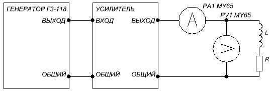
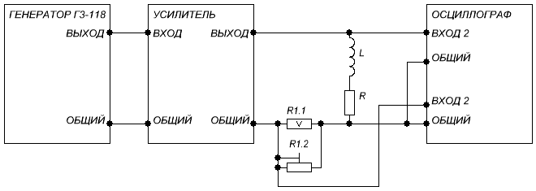
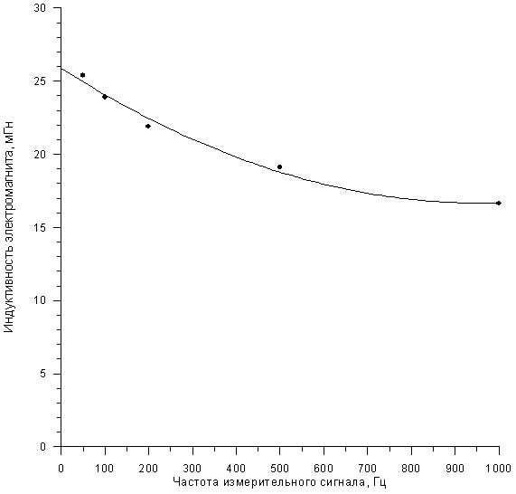
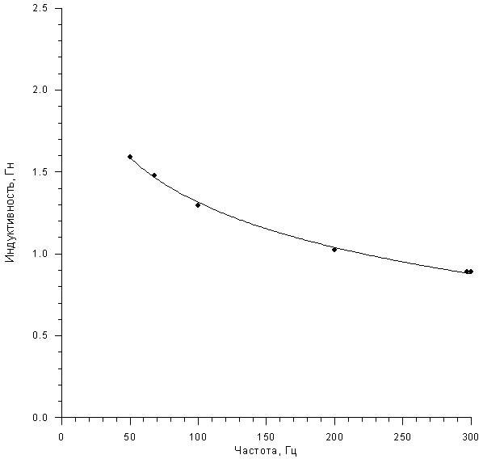
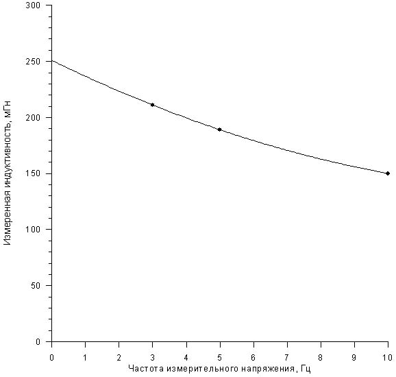
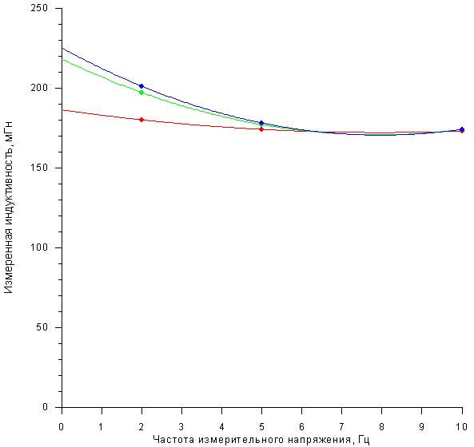

Измерение индуктивности на переменном токе на разных частотах методом амперметра-вольтметра
1. Введение
При изготовлении различных устройств, в которых используются катушки индуктивности, например, индукторов для установок намагничивания [14], электромагнитов постоянного и переменного тока [7, 15, 16], электромагнитных и магнитоэлектрических приводов [4, 6, 8], магнитоэлектрических датчиков [5], а также электрогенераторов [10, 11] требуется рассчитать или измерить их параметры, в частности активное сопротивление и индуктивность. В ряде случаев индуктивность может быть найдена аналитическим путем посредством формул. Например, программа Coil [2] позволяет рассчитывать индуктивность цилиндрических соленоидов (без сердечника), а H_Coils [3], M_Drive [4], M_Transducer [5] - системы из двух цилиндрических соленоидов с использованием специальной методики расчета [9]. Также индуктивность различных обмоток произвольной формы как без сердечника, так и с сердечником может быть найдена методом конечных элементов [1, 12]. После изготовления устройства требуется сравнить рассчитанные параметры с реальными, т. е. необходимо произвести соответствующие измерения.
2. Методика измерений индуктивности
Измерение индуктивности отдельной катушки или нескольких соединенных между собой катушек на переменном токе на разных частотах может быть проведено достаточно простым методом амперметра-вольтметра. Схема измерений приведена на рис. 2.1.

Рис. 2.1. Схема измерения индуктивности на переменном токе на разных частотах методом амперметра-вольтметра.
На катушку, имеющую индуктивность L и активное сопротивление R, от источника сигнала, в качестве которого может использоваться генератор сигналов Г3-118 (или аналогичный) с усилителем мощности [13] или без него, подается переменный ток заданной частоты f, измеряемый амперметром PA1. К выводам катушки (после амперметра) подключается вольтметр PV1. Другой вариант схемы показан на рис. 2.2. Вместо амперметра и вольтметра используется осциллограф. Для измерения тока применяется шунт R1.1R1.2 сопротивлением из ряда 0.1, 1, 10 Ом и т. п., чтобы легче было пересчитывать показания осциллографа. С помощью данной схемы проще проводить измерения на низких частотах (единицы герц).

Рис. 2.2. Схема измерения индуктивности на переменном токе на разных частотах методом амперметра-вольтметра с использованием осциллографа в качестве измерительного прибора.
Ток I через катушку при заданном напряжении U определяется формулой:
где L – индуктивность катушки, R – ее активное сопротивление. Тогда:
Наконец, для индуктивности получаем выражение:
Таким образом, чтобы найти индуктивность, надо считать показания приборов (ток I и напряжение U) и, кроме того, измерить активное сопротивление катушки R. Причем точность измерения активного сопротивления может быть не слишком высокой, так как обычно реактивное сопротивление существенно больше активного. Измерение активного сопротивления можно производить мультиметром в соответствующем режиме.
При измерении индуктивности необходимо учитывать, что она может зависеть от частоты измерительного напряжения и величины тока через катушку.
3. Примеры измерений
3.1. Электромагнит переменного тока
Электромагнит переменного тока [15] предназначен для получения в рабочем зазоре переменного однородного магнитного поля с возможностью регулировки по величине индукции посредством изменения тока в обмотках и по частоте. Магнит состоит из стального ярма и двух прямоугольных катушек со стальными сердечниками. Внешний вид электромагнита показан на рис. 3.1.1. Активное сопротивление катушек электромагнита измерялось мультиметром APPA-107N. Индуктивность электромагнита при последовательном включении обмоток измерялась с помощью схемы рис. 2.2 при измерительном токе 0.8 А в диапазоне частот 50 ... 500 Гц. На рис. 3.1.2 показан график зависимости индуктивности электромагнита от частоты измерительного сигнала (индуктивность на частоте 1000 Гц измерена с помощью LC-метра VC6243). С увеличением частоты измерительного напряжения индуктивность уменьшается и наоборот.
Рис. 3.1.1. Внешний вид электромагнита переменного тока.

Рис. 3.2. Зависимость индуктивности электромагнита переменного тока (последовательное включение обмоток) от частоты измерительного напряжения.
3.2. Квадрупольный электромагнит
Квадрупольный электромагнит [7] предназначен для получения в рабочем зазоре постоянных и переменных низкочастотных магнитных полей различной конфигурации. Электромагнит, внешний вид которого показан на рис. 3.2.1 состоит из стального ярма квадратной формы, к которому крепятся цилиндрические стальные сердечники с коническими полюсными наконечниками. На сердечники надеты катушки в форме цилиндрических соленоидов. Активное сопротивление катушек электромагнита измерялось мультиметром APPA-107N. Индуктивность каждой катушки квадрупольного электромагнита измерялась с помощью схемы рис. 2.1 при измерительном напряжении примерно 10 В в диапазоне частот 50 ... 300 Гц. На рис. 3.2.2 показан график зависимости индуктивности нижней катушки электромагнита от частоты измерительного сигнала. С увеличением частоты измерительного напряжения индуктивность уменьшается.

Рис. 3.2.1. Внешний вид квадрупольного электромагнита.

Рис. 3.2.2. Зависимость индуктивности отдельной (нижней) катушки квадрупольного электромагнита от частоты.
3.3. Однофазный электрогенератор 18 полюсов 19 обмоток
Однофазный низкооборотный электрогенератор, имеющий 18 полюсов и 19 обмоток [10], предназначенный для проведения различных опытов, собран по аксиальной (дисковой) схеме. На плоском статоре закреплены 19 катушек в виде цилиндрических соленоидов со стальными сердечниками. На плоском роторе по окружности расположены 18 постоянных магнитов с чередующейся полярностью. Катушки генератора соединены последовательно. Внешний вид электрогенератора показан на рис. 3.3.1. Активное сопротивление электрогенератора измерялось мультиметром APPA-107N. Индуктивность электрогенератора при последовательном включении обмоток измерялась с помощью схемы рис. 2.2 при измерительном токе 0.1 ... 0.3 А в диапазоне частот 3 ... 10 Гц. На рис. 3.3.2 показан график зависимости индуктивности электрогенератора от частоты измерительного сигнала. С увеличением частоты измерительного напряжения индуктивность уменьшается.

Рис. 3.3.1. Внешний вид электрогенератора 18 полюсов 19 обмоток.

Рис. 3.3.2. Зависимость индуктивности однофазного электрогенератора (18 полюсов, 19 обмоток), измеренной методом амперметра-вольтметра, от частоты измерительного напряжения.
3.4. Трехфазный электрогенератор 16 полюсов 12 обмоток
Трехфазный низкооборотный электрогенератор, имеющий 16 полюсов и 12 обмоток (по 4 на каждую фазу) [11], использовавшийся при проведении опытных работ, собран по аксиальной (дисковой) схеме. На плоском статоре закреплены 12 катушек в виде цилиндрических соленоидов со стальными сердечниками. На плоском роторе по окружности расположены 16 постоянных магнитов с чередующейся полярностью. Катушки каждой из трех генератора соединены последовательно. Внешний вид электрогенератора показан на рис. 3.4.1. Активное сопротивление электрогенератора измерялось мультиметром APPA-107N. Индуктивность каждой фазы электрогенератора при последовательном включении обмоток измерялась с помощью схемы рис. 2.2 при измерительном токе 0.1 А в диапазоне частот 2 ... 10 Гц. На рис. 3.4.2 показан график зависимости индуктивности каждой фазы электрогенератора от частоты измерительного сигнала. С увеличением частоты измерительного напряжения индуктивность немного уменьшается.

Рис. 3.4.1. Внешний вид трехфазного электрогенератора 16 полюсов 12 обмоток.

Рис. 3.4.2. Зависимость индуктивности фаз трехфазного электрогенератора (16 полюсов, 12 обмоток), измеренной методом амперметра-вольтметра, от частоты измерительного напряжения.
4. Заключение
Опробована методика измерения индуктивности методом амперметра-вольтметра на переменном токе с использованием простых схем измерения. Результативность методики позволяет оперативно применять ее при необходимости измерить индуктивность устройства на различных частотах и при разном измерительном токе.
Ссылки:
05.02.2023
Альтернативные источники
энергии
Компьютеры и
Интернет
Магнитные поля
Механотронные системы
Перспективные
разработки
Электроника и технология